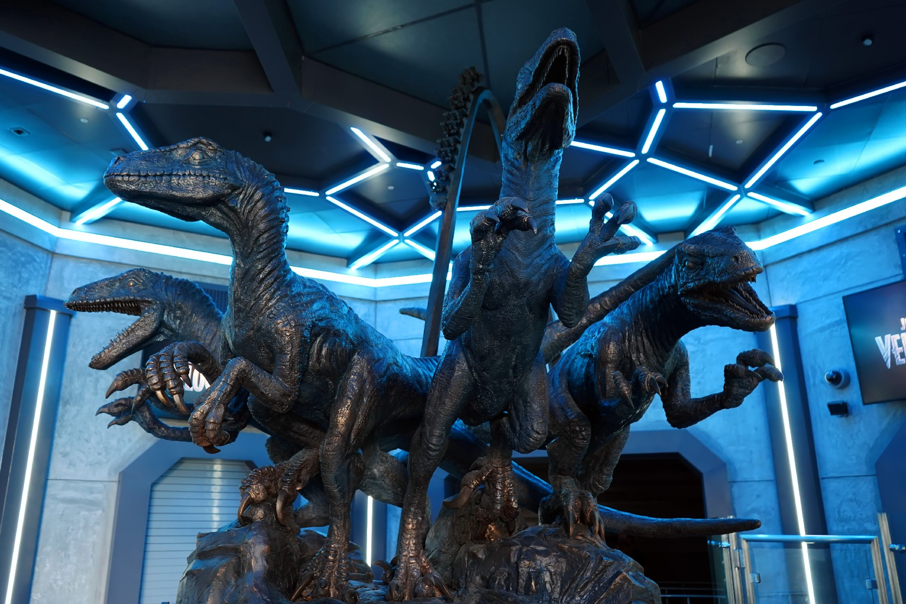
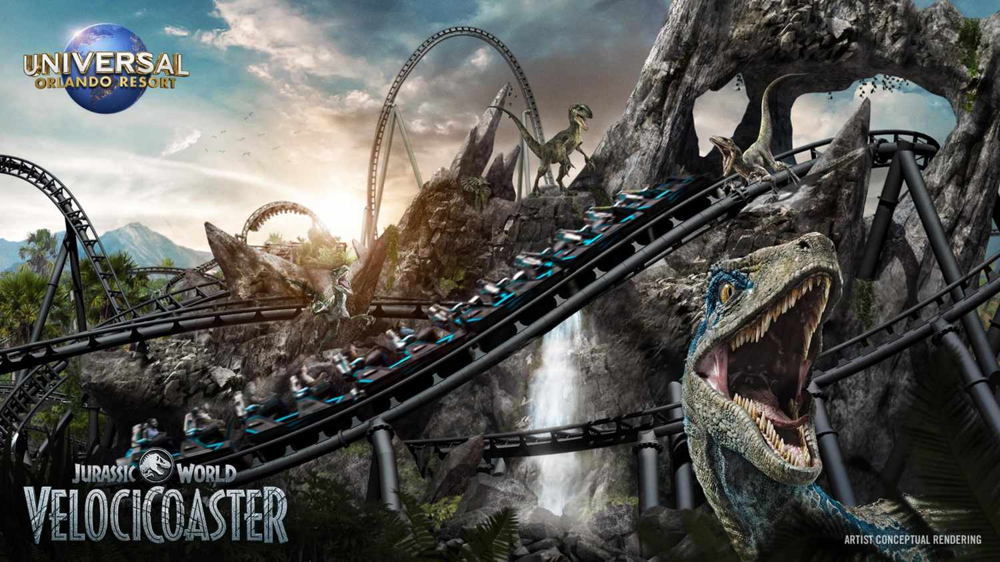

<html>
    <head>
    <title>DMS 321 Midterm: "My vacation at Universal Studios"</title>
    </head>
    <body>

    </body>
</html>

<h1>Universal Orlando Jarassic Park Ride: My Personal Favorite</h1>
  
</p>

<h1>How did the ride operate?</h2>

<h1>This ride was way incredible! Even the presentation leading up to the ride was incredible. My favorite ride in the whole park. I remember just how much fun I had on this ride. The line was really long, however there was so much going on as we entered. It was presented as though we were walking through a lab of sorts. there was stomping, growls, computer set ups showing genetic materials and footage of the actors from the movie talking about the raptors. One of the coolest parts were the Velociraptor heads in chains roaring and growling. Very nice looking animatronics, it was amazing to see. The Velociraptor statues were amazing looking too! Overall, 10/10 on presentation.</h1>

<video wdith = "400" height ="400" controls>
    <source src= "Roar.mp4" type="video/mp4">
</video>

<h1>How fun/exciting was the ride?</h2>
</p>
<h1>Now then, the overall ride. I think this has to be, the fastest ride I have ever been on. It starts with the ride charging up, as you get dragged backwards and shot out at max speed from the start. The best thing to compare it to is a slingshot. Once out the ride dosen't stop as you continue to build up momentum. The loopty loops, and the speed caused the water at the bottom to splash. It was so fast, and it was great feeling the wind across my face. If ever at Universal Orlando, I would highly recommend this ride! </h1>


</p>
<h1><a href="page2.html">Previous page.</a> <a href="page4.html">End Story.</a></h1>

